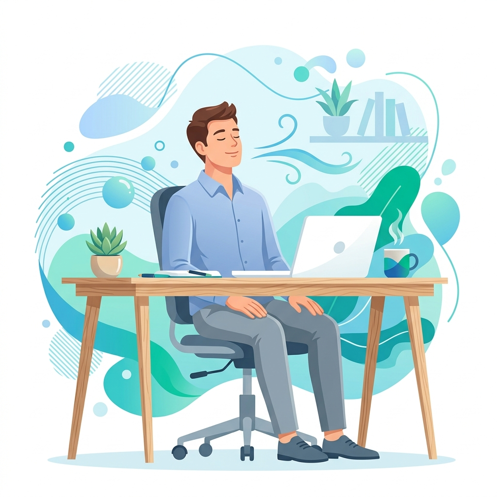

น้องวันใหม่ AI QuitBot!
ผู้ช่วยปรึกษาเลิกบุหรี่ออนไลน์ (24 ชั่วโมง)
ให้เราช่วยคุณหาทางออกที่ดีกว่า พื้นที่ตรงนี้พร้อมเป็นเซฟโซนที่โอบรับและไม่มีการตัดสินใดๆ เพื่อให้คุณได้พักผ่อนอย่างสบายใจ

โฟกัสแค่ในแต่ละวัน เปลี่ยนแปลงความชินทีละนิด เพื่อมอบของขวัญที่งดงามที่สุดให้ตัวเองด้วยความภูมิใจ
แบบประเมินความเครียดสะสม 5 ข้อ พัฒนาโดยกรมสุขภาพจิต กระทรวงสาธารณสุข เพื่อรับข้อแนะนำกิจกรรมผ่อนคลายด่วน
นิโคตินไม่ได้ช่วยคลายเครียดจริง แต่สร้างวงจรเสพติดที่ทำให้เครียดง่ายขึ้น มาทำความเข้าใจกลไกและวิธีรับมือกัน
เลือกวิธีที่เหมาะกับคุณในเวลานี้ เพื่อรีเซ็ตร่างกายและจิตใจใน 60-90 วินาที
เมื่อรู้สึกอยากสูบหรือเหงาปาก การจิบน้ำเย็นจัดช้าๆ 5 อึกจะช่วยระงับตัวรับนิโคตินและล้างปุ่มรับรสในช่องปากได้ทันที
ปรับคลื่นสมองเป็น Alpha wave (432Hz) หรือฟังเสียงฝนตก/คลื่นทะเล เพื่อลดระดับ Cortisol ปลอบประโลมความตึงเครียด
คลายการเกร็งตัวของกล้ามเนื้อ คอ บ่า ไหล่ และหลัง เพื่อกระตุ้นสาร Endorphin ระบายฮอร์โมนแห่งความเครียด
เงินออมต่อสัปดาห์
350 ฿
เงินออมต่อเดือน
1,500 ฿
เงินออมสะสมรายปี (12 เดือน)
18,000 ฿
เรื่องราวและกำลังใจจากคนทำงานออฟฟิศที่สามารถก้าวผ่านความเครียดโดยไม่ต้องพึ่งบุหรี่
"ผมเคยคิดว่าบุหรี่คือคำตอบเดียวเวลาเครียดเรื่องงาน แต่พอลองฝึกสมาธิจิบน้ำ 60 วินาทีตอนอยากสูบ มันช่วยให้สมองลืมความอยากบุหรี่ได้สนิทเลยครับ"
"การเปลี่ยนมาเดินยืดเส้นยืดสายและคุยแชตกับสายด่วนแทนการเดินไปสูบบุหรี่ช่วงพักเบรก ทำให้สุขภาพดีขึ้นมาก ไม่เหม็นติดตัวตอนเข้าประชุมด้วยค่ะ"
"การฟังดนตรีบำบัด 432Hz และประเมิน ST-5 ทำให้ผมรู้ว่าความเครียดพุ่งเพราะงานหนัก เว็บบอร์ดนี้เป็นตัวช่วยระบายสติที่ดีเยี่ยมในการลดความอยากสูบ"
ข้อสงสัยและข้อมูลการใช้งานที่จะช่วยเพิ่มความสบายใจและความอุ่นใจให้คุณตลอดการเข้าใช้บริการ
เรามีแบบฝึกหัดสั้นๆ ความยาว 60-90 วินาที เช่น การฝึกจิบน้ำบำบัดประสาท หรือการเปิดฟังเสียงธรรมชาติลด Cortisol ซึ่งออกแบบมาให้เหมาะสมกับการขจัดความเหนื่อยล้าทางสมองและความคิดกังวลได้ทันทีที่โต๊ะทำงาน โดยคุณไม่จำเป็นต้องเดินออกไปสูบบุหรี่
ปลอดภัย 100% ครับ ข้อมูลการตอบคำถามประเมินความเครียดและการคำนวณทั้งหมดจะประมวลผลบนบราวเซอร์ของเครื่องคุณโดยไม่มีการบันทึกหรือส่งออกข้อมูลออกภายนอก ทำให้คุณมั่นใจในสิทธิและความเป็นส่วนตัวที่ออฟฟิศได้อย่างเต็มที่
คุณสามารถเปิดกล่องแชตเพื่อสนทนากับแชตบอตน้องวันใหม่เบื้องต้น หรือหากต้องการคำปรึกษาเพื่อวางแผนร่วมกับผู้เชี่ยวชาญ (นักจิตวิทยาช่วยเลิกบุหรี่) คุณสามารถโทรหาสายด่วนเลิกบุหรี่แห่งชาติ 1600 ได้ฟรีทันทีจากลิงก์บนแถบเมนูด้านบน
น้องวันใหม่เปรียบเสมือนเพื่อนคู่คิด AI (Peer Support) ที่พร้อมโอบรับทุกอารมณ์ คอยให้ข้อมูลวิทยาศาสตร์ แนะนำกิจกรรมเบี่ยงเบนความสนใจในระยะสั้น และให้คำชี้แนะเพื่อดึงสติให้คุณมีพลังเอาชนะความอยากชั่ววูบได้โดยไม่ตัดสินผลลัพธ์ครับ
ผู้ช่วยปรึกษาเลิกบุหรี่ออนไลน์ (24 ชั่วโมง)